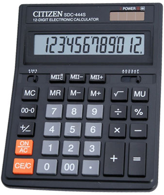
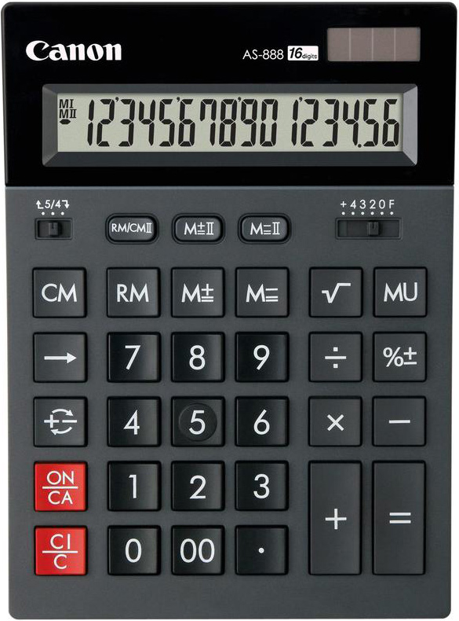
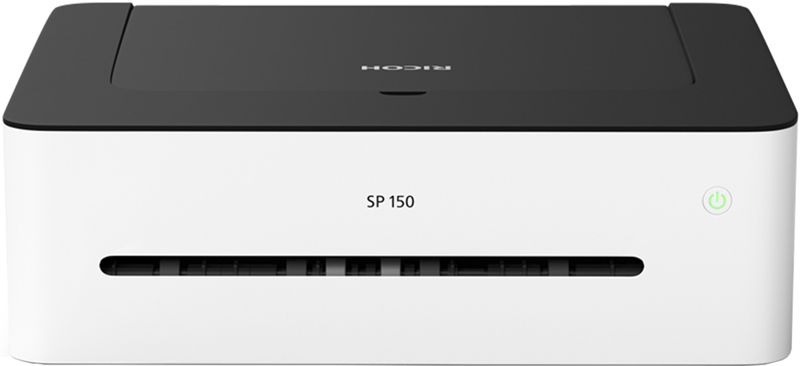
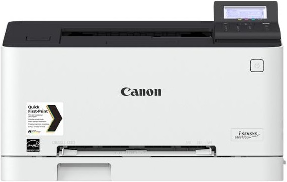
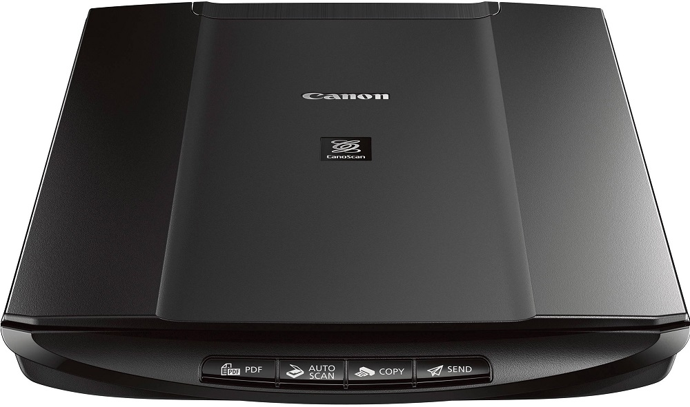
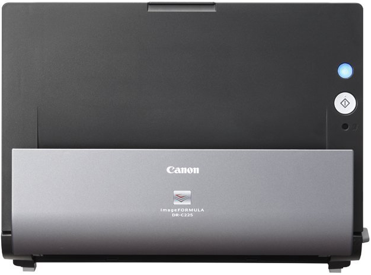
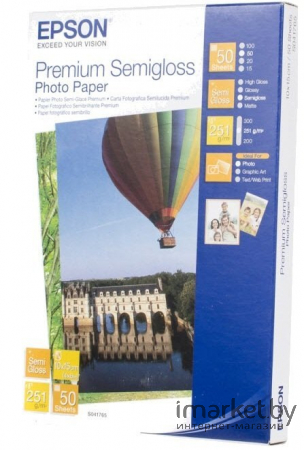
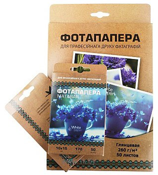

Детектор валют
Просмотровый; проверка в ИК-спектре, проверка в видимом спектре, проверка магнитных меток, проверка в УФ-спектре; дисплей; питание: адаптер 12 В.

Детектор валют
Автоматический; скорость 100 банкнот/мин; проверка в видимом спектре, проверка в ИК-спектре, проверка магнитных меток, проверка размера банкноты; базовые валюты: USD, EUR, российские рубли; определение номинала банкнот; дисплей; питание: аккумулятор, сеть 220 В, адаптер 12 В.

Калькулятор
12-разрядный калькулятор с двойной памятью. Однострочный цифровой дисплей. Функции: квадратный корень числа, процент, смена знака числа, функции запоминания (два регистра памяти). Клавиша MU (расчет маржи). Клавиша "00". Функция округления вычислений. Полозковый переключатель количества знаков после десятичной точки, округления.

Калькулятор
Калькулятор с 1-строчным ЖК-дисплеем. Ответ длиной до 16 разрядов. Автоматическое отключение калькулятора (через 7 минут). Кнопки "%", "00", квадратный корень. Память. Смена знака. Вычисления: Наценка (MU). Округление (с увеличением, 5/4, с уменьшением). Двойное питание: от солнечного элемента и батарейки (LR44 x 1 шт.).

Принтеры
A4; монохромная печать; 1200x600 dpi; выход первого отпечатка - 11 с; скорость печати до 22 стр/мин; интерфейсы - USB.

Принтеры
A4; цветная печать; 600x600 dpi; выход первого отпечатка - 12 с; скорость печати до 18 стр/мин; автоматическая двусторонняя печать; информативный дисплей; интерфейсы - Wifi, Ethernet, USB.

Сканеры
Планшетный; контактный (CIS) датчик; A4; подключение: USB; Оптическое разрешение - 2400x4800 dpi.

Сканеры
Протяжный; контактный (CIS) датчик; A4; подключение: USB; Оптическое разрешение - 600x600 dpi; устройство автоподачи - одностороннее.

Фотобумага
Тип фотобумага, назначение струйная печать, формат 10x15

Фотобумага
ФОРМАТ А4, 25 Л